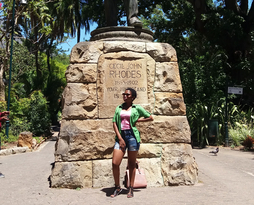
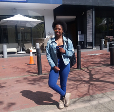

Londiwe cele

which city

Zhangjiajie Glass Bridge is the world’s longest and highest brigde, its really looks scary and terifying well that my kind of fun. you can have a brand new experience on the Glass Bridge to look down of the verdant view on the transparent glass floor. the very long and steep walk way, super narrow way at Yixiantian, and other beautiful natural scenery will take you to tour in excitement, enjoyment,
A foreign language
I would like to learn Spanish just because i think it romantic
| English | Spanish |
|---|---|
| I love you | te amo |
| you're beautiful | eres hermosa |
| pure heart | Corazón puro |
Historical places

Nobel sqaure V&A
- The V&A Waterfront is the home of four bronze statues of four men who are part of a proud moment in South African history
- Collectively they brought down a system of government that was faulty and inhumane in a peaceful manner with the minimum of bloodshed
- These men each represent a sector of the society who supported them so in fact they stand as representatives of all the people who suffered hardships and some who lost their lives for the cause.

Mr Cecil John Rohdes
- After dark, the street comes alive in a new way
- Long Street is a shopper’s paradise
- Long Street is also home to a number of interesting landmarks.

Long Street
- After dark, the street comes alive in a new way
- Long Street is a shopper’s paradise
- Long Street is also home to a number of interesting landmarks.